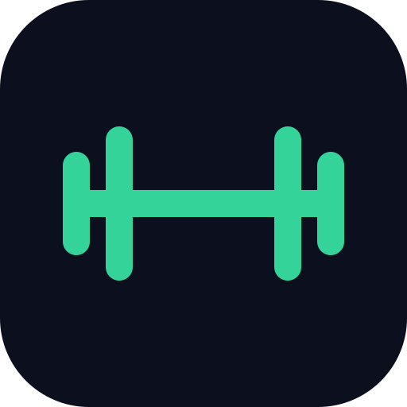

FitLog
LiveA workout log, a meal and macro tracker and a fasting timer in one app. I built it for my own training, because the trackers I tried felt bloated and I wanted all three in one place.
- Also in it
- Personal records, trend charts, and workout and meal programs you can reuse
- Offline
- Log a workout with no signal. It syncs when you're back online.
- Install
- Runs in the browser, and you can add it to your home screen without going through an app store.
- Your data
- Export all of it, or delete your account from Settings.